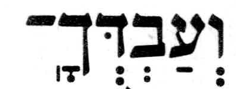
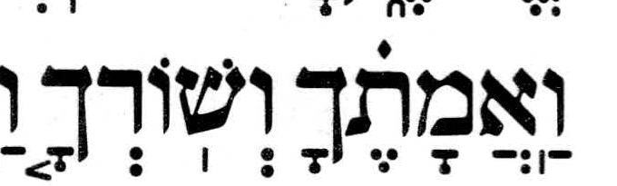
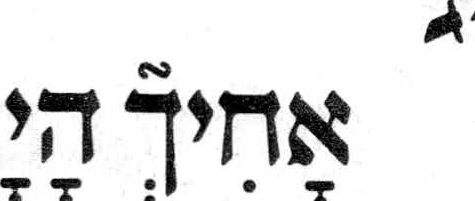

Stress helpers in MAM and Koren Classic Tanakh
Stress helpers in MAM and Feldheim Simanim Tanakh
The table lists differences among selected readings in prose verses, including readings from the Decalogue appendices. It uses MAM verse numbering.
Koren has redundant pashta helpers on eleven chanted words whose final syllable ends with two consonants bearing sheva. Phonetic MAM places the stress on that same final syllable.
The comparison incorporates the Hebrew Wikisource correction at 2Sam 4:6. Koren, the Simanim Tanakh and corrected MAM have the telisha gedolah helper on the first he in וְ֠הֵ֠נָּה. The checked-in MAM-with-doc text still has the helper on nun. Wikisource correction
| Readings | MAM verse | Difference | Page | Scan crop |
|---|---|---|---|---|
MAMאֲשֶׁר֩ Korenאֲ֠שֶׁ֠ר | Lev 7:36 | Different accent MAM’s note reports telisha gedolah in Koren and lists a doubled form. The scanned copy has the doubled form. MAM doc-note | p. 162 |  |
MAMקִ֞֠רְב֞֠וּ Korenקִ֠רְב֞וּ | Lev 10:4 | Geresh or gershayim + telisha gedolah Koren has telisha gedolah on qof and gershayim on bet. MAM has both marks on both letters. MAM doc-note MAM’s notes describe the two cases where geresh or gershayim and telisha gedolah belong on different letters. MAM notes on telisha gedolah | p. 166 |  |
MAMשְׁ֚תַּיִם Korenשְׁתַּ֙יִם֙ | Lev 23:17 | Different accent MAM’s note gives the doubled pashta for Koren and other printed editions. MAM doc-note | p. 190 |  |
MAMוְעַבְדְּךָֽ־וַ֠אֲמָתֶ֠ךָ Korenוְעַבְדְּךָֽ־וַֽאֲמָתֶ֗ךָ | Deut 5:13 תחתון | Different accent Koren Deut 5:14 has revia on tav and a meteg on vav. Its body agrees with the accent in MAM’s printed-tradition supplement. | p. 281 |   |
MAMוַיֵּתֵא֙ Korenוַיֶּ֙תֵא֙ | Deut 33:21 | SH in Koren only MAM’s note reports final stress in MAM and a segol with the pashta stress helper on yod in Koren. The scan also shows a dagesh in yod. MAM doc-note | p. 326 |  |
MAMוַיֵּבְךְּ֙ Korenוַיֵּ֙בְךְּ֙ | 2Sam 3:32 | redundant SH in Koren Koren places the stress helper on yod. Phonetic MAM places stress on the same final syllable. Phonetic MAM | p. 146 |  |
MAMאָחִ֘יךְ֮ Korenאָחִיךְ֮ | 2Sam 13:20 | redundant SH in MAM The ḥet begins the final, stressed syllable in Phonetic MAM. The second occurrence in this verse has munaḥ on ḥet. Koren has the final zarqa alone. Phonetic MAM | p. 161 |  |
MAMוַיֹּ֙אמֶר֙ Korenוַיֹּ֣אמֶר | 2Kgs 20:14 | Different accent Koren has munaḥ on yod in the second occurrence of this chanted word. | p. 279 |  |
MAMוְשָׁפַלְתְּ֙ Korenוְשָׁפַ֙לְתְּ֙ | Isa 29:4 | redundant SH in Koren Koren places the stress helper on pe. Phonetic MAM places stress on the same final syllable. Phonetic MAM | p. 320 |  |
MAMתוֹסִ֙יפִי֙ Korenתֽוֹסִיפִי֙ | Isa 47:1 | no SH in Koren Koren also prints a meteg on initial tav. | p. 341 |  |
MAMתוֹסִ֙יפִי֙ Korenתֽוֹסִיפִי֙ | Isa 47:5 | no SH in Koren Koren also prints a meteg on initial tav. | p. 341 |  |
MAMאָמַרְתְּ֙ Korenאָמַ֙רְתְּ֙ | Isa 47:10 | redundant SH in Koren Koren places the stress helper on mem. Phonetic MAM places stress on the same final syllable. Phonetic MAM | p. 342 |  |
MAMוְיָנַקְתְּ֙ Korenוְיָנַ֙קְתְּ֙ | Isa 60:16 | redundant SH in Koren Koren places the stress helper on nun. Phonetic MAM places stress on the same final syllable. Phonetic MAM | p. 354 |  |
MAMרָצֹ֙חַ֙ Korenרָצֹחַ֙ | Jer 7:9 | no SH in Koren | p. 373 |  |
MAMאֶת־רֵעֵ֙הוּ֙ Korenאֶת־רֵעֵ֣הוּ | Jer 9:7 | Different accent Koren has munaḥ on ayin. | p. 376 |  |
MAMמַה־נֵּחַנְתְּ֙ Korenמַה־נֵּחַ֙נְתְּ֙ | Jer 22:23 | redundant SH in Koren Koren places the stress helper on ḥet. Phonetic MAM places stress on the same final syllable. Phonetic MAM | p. 395 |  |
MAMוְתַ֩מּוּ֩ Korenוְתַמּוּ֩ | Jer 44:27 | no SH in Koren The MAM doc-note attributes the doubled telisha qetanna to the Aleppo Codex. MAM doc-note | p. 434 |  |
MAMוְגַם־נִלְכַּדְתְּ֙ Korenוְגַם־נִלְכַּ֙דְתְּ֙ | Jer 50:24 | redundant SH in Koren Koren places the stress helper on kaf. Phonetic MAM places stress on the same final syllable. Phonetic MAM | p. 443 |  |
MAMשֹׁכַנְתְּ֙ Korenשֹׁכַ֙נְתְּ֙ | Jer 51:13 | redundant SH in Koren Koren places the stress helper on kaf in the pointed margin qere. Phonetic MAM places stress on the same final syllable. Phonetic MAM | p. 445 |  |
MAMבַּעֲשׂ֩וֹתִי֩ Korenבַּֽעֲשׂוֹתִי֩ | Ezek 5:15 | no SH in Koren The MAM doc-note attributes the doubled telisha qetanna to the Aleppo and Leningrad codices. Koren also has a meteg on bet. MAM doc-note | p. 458 |  |
MAMכֵּ֠לַ֠י Korenכֵּלַ֨י | Ezek 12:7 | Different accent Koren has qadma on lamed, before geresh on the next chanted word. | p. 466 |  |
MAMלֹֽא־זָכַרְתְּ֙ Korenלֹֽא־זָכַ֙רְתְּ֙ | Ezek 16:43 | redundant SH in Koren Koren places the stress helper on kaf in the pointed margin qere. Phonetic MAM places stress on the same final syllable. Phonetic MAM | p. 473 |  |
MAMפִּלַּלְתְּ֙ Korenפִּלַּ֙לְתְּ֙ | Ezek 16:52 | redundant SH in Koren Koren places the stress helper on the first lamed. Phonetic MAM places stress on the same final syllable. Phonetic MAM | p. 473 |  |
MAMבַסּ֙וּגַר֙ Korenבַסּוּגַר֙ | Ezek 19:9 | no SH in Koren | p. 478 |  |
MAMוְיָשַׁבְתְּ֙ Korenוְיָשַׁ֙בְתְּ֙ | Ezek 23:41 | redundant SH in Koren Koren places the stress helper on shin. Phonetic MAM places stress on the same final syllable. Phonetic MAM | p. 487 |  |
MAMוּ֜֠לְאֵ֜֠לֶּה Korenוּ֠לְאֵ֜לֶּה | Ezek 48:10 | Geresh or gershayim + telisha gedolah Koren has telisha gedolah on vav and geresh on alef, as the MAM doc-note reports. MAM doc-note | p. 526 |  |
MAMתִרְגַּ֙לְתִּי֙ Korenתִּרְגַּ֣לְתִּי | Hos 11:3 | Different accent Koren has munaḥ on gimel and a dagesh in initial tav. | p. 538 |  |
MAMוַיֵּשְׁתְּ֙ Korenוַיֵּ֙שְׁתְּ֙ | Ruth 3:7 | redundant SH in Koren Koren places the stress helper on yod. Phonetic MAM places stress on the same final syllable. Phonetic MAM | p. 160 |  |
MAMוַיֹּ֗אמֶר Korenוַ֠יֹּ֠אמֶר | Esth 6:1 | Different accent MAM’s note reports the doubled telisha gedolah for Koren and the Simanim Tanakh. The scanned Koren copy has the doubled form. The scanned Simanim Tanakh has revia, in agreement with MAM. MAM doc-note | p. 193 |  |
MAMלָשֶׁ֙בֶת֙ Korenלָשֶׁ֤בֶת | Neh 11:1 | Different accent Koren has mahapakh on shin. | p. 264 |  |
MAMלִמְלִ֙יכוּ֙ Korenלִמְלִיכוּ֙ | Neh 12:14 | no SH in Koren The pointed Koren qere in the margin has final pashta only. | p. 266 |  |


The Koren Classic Tanakh, Classic Edition, Large Size. Koren Publishers Jerusalem Ltd. © 1962, 2020 for font and text design. The crops document the printed readings shown in the table.
MAM text from MAM-with-doc, based on Miqra according to the Masorah at Hebrew Wikisource, CC BY-SA 4.0.